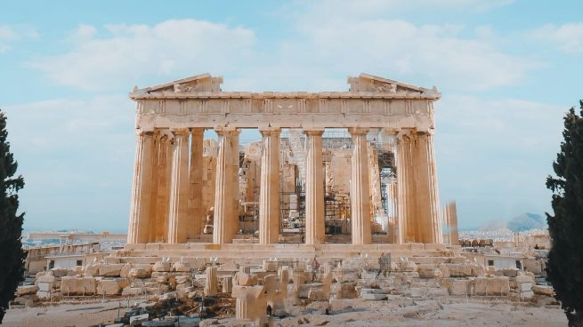
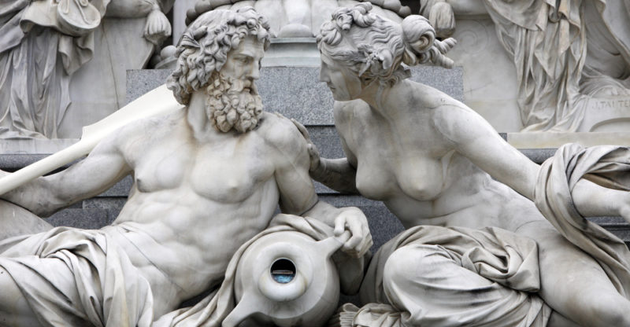

Mitología griega
INDICE
Cómo comenzó todo para los griegos
¿Qué es la mitología griega?
La mitología griega, es como cualquier otra cultura, se usó como un medio para explicar, el entorno en el cual vivían, como los son los fenómenos naturales que pasaban en ese tiempo, así como también se explicaba el origen de la vida, hacia dónde vas después de la muerte y cómo se originó el universo, se explican sucesos históricos, a los que actualmente se les llama mitos. Los antiguos griegos creían que había un grupo de dioses en un lugar llamado el Olimpo, ya que residirán un monte llamado así.

Cómo comenzó todo para los griegos
Según el relato que creían los griegos, Antes de que existieran todas las cosas, en donde se dice que solo el caos y el desorden, y del caos nació Gea, la diosa Madre Tierra, que era enorme, hermosa, pero también temible, al estar muy sola, decidió que quería tener un compañero, tan inmenso como para poder abrazarla, entonces creó el cielo estrellado tan grande como la misma Gea, a este lo llamo Urano
Gea y Urano, decidieron tener muchos descendientes, primero nacieron doce titanes, tanto varones como mujeres, después nacieron tres cíclopes, gigantes con un solo ojo en medio de su frente, “Los Cíclopes fueron los dueños del Rayo, el Relámpago y el Trueno. Y finalmente nacieron los tres Hecatónquiros, monstruos violentos de cincuenta cabezas y cien brazos.”
Urano desconfiaba de sus hijos, puesto que creía que lo iban a despojar de su poder sobre el universo, por ello decidió encerrar a sus hijos en el vientre de su madre Gea, era un lugar oscuro y terrible al cual lo llamaban tártaro.
Gea les pidió a sus hijos ayuda, y les dijo “Con esta hoz mágica que yo misma fabriqué, deben enfrentarse a Urano. ¡Ya es hora de que pague por sus maldades! Pero los hijos, aunque eran enormes y poderosos, se sentían pequeños frente a su padre, el inmenso Cielo Estrellado, y no se atrevían a asomarse fuera de la Madre Tierra.”
Solo el hijo más chico de todos los titanes, Cronos, estaba dispuesto a ayudar a su madre, pero no solo por el mar que le tenía, sino porque el joven quería desterrar a Urano de su poder.
Una noche, Urano llegó abrazando a la tierra (Gea), su hijo cronos le cortó los genitales con hoz de su madre y los arrojó al mar, de toda la espuma del agua causado por esta acción, nació la más hermosa de las deidades, Afrodita, diosa del amor y belleza.
Tras esto cronos maldijo a cronos, diciéndole que algunos de sus hijos lo desterrasen de su poder como lo había hecho con él, tras esto fue encerrado en lo más profundo del tártaro, tras esto liberó a sus hermanos, sin embargo, dejó a los que no se parecían a él, y tenían un aspecto aterrador, y ahora cronos reinaba el Universo.
Los hijos de cronos
Después de destronar a su padre, el joven titán Cronos se casó con la titánida Rea, la de hermosos cabellos. Tuvieron seis hijos. Pero Cronos no olvidaba la maldición de su padre Urano. Con su mente malvada y retorcida, decidió que ninguno de sus pequeños crecería lo suficiente como para enfrentarse con él. Simplemente, se los comería vivos. Y así fue. Primero nació la pequeña Hestia, Su madre apenas había comenzado a envolverla en pañales cuando Cronos la tomó con sus enormes manos y la devoró en un instante. Rea, la de hermosos cabellos, no podía creer lo que había pasado. Su corazón sangraba de dolor.
Uno por uno Cronos fue devorando a sus hijos. Deméter, Hera, Hades, Poseidón, apenas alcanzaba la madre, desesperada, a ponerles nombre, cuando ya se habían convertido en monstruoso alimento para su padre. Rea estaba en su sexto embarazo cuando pidió ayuda a su madre, Gea, para salvar a ese bebé. ¡Aunque fuera uno solo de sus hijos tenía que escapar a ese horrendo destino!
Siguiendo los consejos de su madre, Rea le dijo a su marido que debía hacer un viaje a la isla de Creta.
Allí, en medio de un bosque espeso había una profunda caverna, donde se ocultó la titánida para parir a Zeus, el menor de sus hijos.
Gea, la Madre Tierra, se hizo cargo del pequeño. Una cabra le daba su leche y las abejas del monte destilaban para él la miel más exquisita.
Entretanto, Rea volvió con su marido, quejándose como si estuviera sufriendo en ese momento los dolores del parto. Poco después le entregó a Cronos lo que parecía un bebé, su sexto hijo. Cronos se lo tragó sin dudar un segundo. Solo le pareció que este hijo resultaba más pesado que los anteriores: lo que le había dado su esposa era una enorme piedra envuelta en pañales.
Zeus creció rápidamente y en solo un año se había convertido en un dios adulto y poderoso. Su abuela Gea tenía preparado un plan para librarse del malvado Cronos.
Pero antes era necesario que Zeus recuperara a sus hermanos. Con ayuda de Rea, hicieron tragar a Cronos una poción mágica que lo obligó a devolver a la vida a todos los hijos que había devorado. Así, convertidos ya en adultos, en toda su fuerza y majestad, se desprendieron de la carne de Cronos los hermanos de Zeus. De este modo, volvieron a la vida Hestia, Deméter, Hera, Hades y Poseidón, y se fueron a vivir junto a Zeus, en lo alto del monte Olimpo.
Debían prepararse para la guerra que se avecinaba.
Astronomía griega
La astronomía, según la antigua Grecia era el estudio del universo, el cual serbia para entender como funcionaba y por qué, los astrónomos de aquella época se basaban en la observación y el cálculo matemático, para poder determinar el funcionamiento del universo y el lugar que ocupaba la tierra en este.
Las observaciones astronómicas tenían como fin primordial servir como una guía para aquellos agricultores que lo necesitaban, por ello se trabajó en el diseño de un calendario que fuera útil para dichas actividades.
La Odisea de Homero
Dicha esta se refiere a constelaciones como la “Osa Mayor y Orión, y describía el cómo podían servir las estrellas para la navegación utilizándolas como mapas o incluso como coordenadas.
Las aportaciones científicas griegas más importantes se accionan con los nombres de los filósofos Tales de Mileto y Pitágoras, sin embargo, no se conserva ninguno de sus escritos. La leyenda de Tales predijo un eclipse de Sol el 28 de mayo de 585 A.C, dicho acontecimiento parece ser apócrifa.
Aristarco de Samos
El creía que los movimientos celestes se podían explicar mediante la hipótesis de que la tierra gira sobre su propio eje una vez cada 24 horas y que junto con los demás planetas este giraba alrededor del sol, esta hipótesis fue rechazada por varios filósofos griegos que contemplaban la tierra como si esta fuera un globo inmóvil en el cual giraban ligeros objetos celestes.
La teoría fue conocida como un sistema geocéntrico, la cual permaneció inalterada unos 2,000 años. Las bases de esta eran;
- Los Planetas, el Sol, la Luna y las Estrellas se mueven en orbitas circulares perfectas.
- La velocidad de los Planetas, el Sol, la Luna y las estrellas son perfectamente uniformes.
- La Tierra se encuentra en el centro exacto del movimiento de los cuerpos celestes.
Mitología griega en las artes
"A lo largo del tiempo, la mitología griega ha servido como fuente de inspiración en múltiples manifestaciones artísticas, como la pintura, el teatro y las artes audiovisuales."
- Minerva y el Centauro, de Boticcelli (1492)
- Diana y Acteón, de Tiziano (1556)
- Venus y Adonis, de Rubens (1630)
El teatro se ha nutrido de los complejos arquetipos presentes en la mitología griega para representar conflictos modernos, o bien para reinterpretar tragedias, como la de Edipo rey y Antígona de Sófocles.
La literatura, la poesía, y hasta el cine y la televisión se han visto influenciados por las historias mitológicas griegas, sus dioses y héroes. Estas son algunas representaciones cinematográficas contemporáneas basadas en dichos mitos:
- Troya (Wolfang Petersen, 2004)
- Furia de Titanes (Louis Leterrier, 2010)
- La leyenda de Hércules (Renny Harlin, 2014)
Principales dioses griegos
| ZEUS | Es el mas poderoso de todos los dioses griegos. Dios del trueno, creador del rayo y el relampago, e hijo de Cronos y Gea. |
| HERA | Es la diosa de la fertilidad y la lealtad, protectora de las mujeres y la familia. |
| HEFESTO | Es el dios del fuego, hijo de Hera y Zeus. |
| APOLO | Hijo de Zeus y Leto, es el dios de la luz y el Sol, de las artes, la poesia, y de la musica, es el encargado de guiar su carro tirado por cuatro caballos alados, cuyo recorrido representaba el paso del tiempo y el cambio de estaciones. |
| ATENEA | Es la diosa de la sabiduria y la guerra. |
¿Quieres conocer algunos relatos sobre mitologia griega?
Referencias
Caja de Pandora - Qué es, mito, interpretación y versiones. (s. f.). Concepto. https://concepto.de/caja-de-pandora/
¿Eran Aquiles y Patroclo amantes? Respuesta corta: sí. (s. f.). https://momoko.es/miscelaneo/eran-aquiles-y-patroclo-amantes-respuesta-corta-si
Llano, A. (2022, 16 diciembre). Artemisa, así es el mito de la diosa griega más venerada (y diferente). El Español. https://www.elespanol.com/mujer/20221216/artemisa-mito-diosa-naturaleza-griega-venerada/725677463_0.html
Sánchez, E. (2022, 25 mayo). El mito de Afrodita y Ares, la unión de belleza y guerra. La Mente es Maravillosa. https://lamenteesmaravillosa.com/el-mito-de-afrodita-y-ares-la-union-de-belleza-y-guerra/
Mark, J. J. (2023). Astronomía griega. Enciclopedia de la Historia del Mundo. https://www.worldhistory.org/trans/es/1-12040/astronomia-griega/
Mark, J. J. (2023a). Aristarco de Samos. Enciclopedia de la Historia del Mundo. https://www.worldhistory.org/trans/es/1-11783/aristarco-de-samos/
Cartwright, M. (2023). Perséfone. Enciclopedia de la Historia del Mundo. https://www.worldhistory.org/trans/es/1-779/persefone/
Vicente, E. A. (2022). Mitología Griega. Significados. https://www.significados.com/mitologia-griega/#:~:text=Los%20mitos%20y%20leyendas%20griegas,surgimiento%20de%20las%20primeras%20leyendas.
Autor: Karla Vázquez